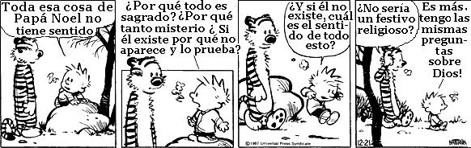

Publicado originalmente en inglés, en American Chronicle, 10 de Agosto de 2006.
En este articulo se darán respuesta a los errores mas comunes que cometen los creyentes sobre los ateos.
1. El ateísmo es la creencia en que ningún dios existe
La ubicuidad de esta declaración es excedida solamente por su completa falsedad; no solo es engañosa, sino que es totalmente opuesta a la verdad.
La palabra ateísmo proviene del prefijo griego “a”, que significa “sin”, y “teísmo”, que implica la creencia en una deidad sobrenatural. Ateísmo, por lo tanto, significa literalmente “sin creencia teísta”. El ateísmo no afirma positivamente nada; por el contrario, es una declaración de abstención ante la creencia.
Los ateos, por lo tanto, no afirman positivamente que no existen los dioses. Simplemente se abstienen de creer en dichos dioses porque no hay suficiente evidencia que garantice la fe. Esto no es decir que no haya suficientes razones para creer que ciertos dioses no existen. La hay. Pero negar categóricamente la existencia de todos los dioses requeriría un salto de fe que es anatema a un verdadero ateo. El ateísmo no requiere de tal salto.

2. El ateísmo requiere de tanta fe como el teísmo
Este malentendido se presenta debido a la falta de comprensión del término ateísmo, tal como se ha descrito anteriormente.
Si el ateísmo fuera de hecho una aserción positiva de que no existe ningún dios, entonces esta crítica sería válida. Después de todo, tomaría tanta fe declarar que no existe ningún dios como declarar que existe un dios o muchos dioses. Pero el ateísmo no hace tal declaración.
El ateísmo, según lo observado antes, no es nada más que la abstención de creer. No se necesita fe para tener una no-creencia. Si no creo que Elvis todavía esté vivo, no estoy practicando una fe anti-Elvis. Si me abstengo a creer en Papa Noel, no soy un miembro de la iglesia de Sin Papa Noel. Cuando un ateo dice, “no creo en el dios cristiano”, está diciendo simplemente que la evidencia para creer en él es insuficiente. Es el mismo tipo de abstención a la creencia que un cristiano practica con respecto a la creencia de musulmanes, de judíos y de otros no-cristianos.
3. Las vidas de los ateos no tienen sentido y están desprovistas de esperanza y de propósito
Esto no es sino la proyección de los propios sentimientos del creyente sobre el ateo, sobre lo diferente que podría ser su vida en ausencia de dios. No dice nada sobre los verdaderos sentimientos de los ateos.
Las vidas de los ateos no se atan a la remota posibilidad de una vida después de la muerte. Mi vida es significativa, simplemente, porque es significativa para mí y para aquellos que me aman. Mi vida tiene propósito cada vez que me esfuerzo hacia una meta digna. No necesito la promesa de una vida futura para encontrar significado y propósito en esta vida.
De hecho, mi vida es más preciosa y más significativa simplemente porque sé que es corta y efímera. Ya que no espero ninguna recompensa o castigo eterno después de la muerte, trato cada día como un regalo. Compárese esto con los procesos del pensamiento de un fundamentalista islámico, que está dispuesto a abandonar su vida terrenal por la promesa de dicha eterna en los brazos de 72 vírgenes hambrientas de sexo. Me pregunto, ¿La vida de quién tiene más esperanza, más significado y más propósito?
4. Los ateos no tienen ninguna moral porque rechazan la creencia en un creador de moral eterno (es decir, dios)
Si se piensa sobre ello, es una declaración absurda. Éticas y morales, después de todo, preceden a Jesús por miles de años. El sermón de Jesús en la montaña, a la vez que servía de inspiración, era básicamente un refrito de la misma regla de oro que había estado en circulación desde hacía tres milenios. Pero echemos una mirada más crítica.
Si dios es la fuente de todas las morales, entonces dios, presumiblemente, podría cambiar las reglas en cualquier momento. Ya que nadie esta escribiendo nuevas Biblias o hablando con dios detrás de zarzas ardientes, ¿cómo podemos saber qué es lo correcto ahora, hoy? ¿Qué puede impedir a Dios decidir que ahora el comportamiento moral correcto incluye la opción de dejar hambrientos intencionadamente a millones de niños inocentes, y luego demostrar esta nueva moralidad provocando el hambre sobre las naciones más pobres del mundo? ¿Cómo distinguiríamos el bien del mal en tales circunstancias? ¿No conduce esto al mismo tipo del relativismo moral que los teístas acusan a los ateos de practicar?
Si, por otra parte, las leyes morales son independientes de dios, entonces la gente es libre de descubrir estas leyes por sí misma. De una u otra forma, parece que dios es innecesario con respeto al comportamiento moral. Los ateos simplemente siguen la agenda moral que ha sido refinada por la evolución de civilizaciones avanzadas durante los siglos pasados. Hemos aprendido como ser agradables el uno al otro. No es tan difícil, realmente.
5. Los ateos deben haber tenido una mala experiencia de niños para hacer que ellos desistieran de la religión y odiaran a Dios
Algunos ateos pueden haber tenido tales experiencias, pero puedo asegurarle que este no es el caso en la mayor parte de las situaciones. Para mí, y para la mayor parte de los ateos, el viaje de la creencia a la no creencia es simplemente un proceso gradual de descubrimiento que eventualmente conduce a que dios o los dioses se hacen innecesarios.
No necesito un dios para explicar el origen o la evolución de la vida sobre la Tierra; la evolución proporciona una explicación naturalista e imponente que es apoyada por montañas de evidencias. No necesito un dios para consolarme contra el miedo a la muerte y lo desconocido; no temo a la muerte. No necesito un dios para dar cuenta del egoísmo humano o el altruismo; mi entendimiento de la naturaleza humana logra esto.
En suma, como mi conocimiento ha aumentado, los huecos que un dios podría haber llenado se han hecho cada vez más pequeños, al punto que ya no es necesario un dios. No estoy más enfadado con “Dios” de lo que lo están los cristianos con los dioses del Monte Olimpo. Los cristianos simplemente no tienen ninguna necesidad de creer en dichos dioses, no pierden nada por rechazarlos. Lo mismo es verdadero para mí y “dios”.
Para terminar, un ateo rechaza la creencia en un dios o dioses porque las pruebas no obligan a tal creencia. Esto no conduce a un universo solo y aterrador; de hecho, le da más significado a la vida, y más propósito. Los ateos no están enfadados ni son resentidos; son pensativos, humanitarios y respetuosos con la dignidad inherente a todos nosotros. No merecen ninguno de los ácidos calificativos con los que constantemente se los asocia.
Volver a Simplemente ateísmo
Comentarios
Comments powered by Disqus